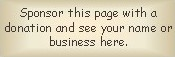

|
Weitgedackt German Weitgedeckt German |  |
Weitgedeckt is mentioned only in passing by Audsley in a list of Gedeckt variants, without any description. The German word weit means �wide� or �distant�; from this we can surmise that it is either a wide-scaled Gedeckt, or an Echo Gedeckt.
Weitgedackt 8', Schwellwerk; Dom, Halberstadt, Germany; Eule 1965.
Weitgedackt 8', Oberwerk; Schauspielhauses, Berlin, Germany; Jehmlich.
Weitgedackt 8', Hauptwerk; Kaiserdom, Speyer, Germany; Scherpf 1961/77.
Weitgedackt 16', Pedalwerk; Dom, Paderborn, Germany; Sauer 1981.
|
Original site compiled by Edward L. Stauff. For educational use only. Weitgedeckt.html - Last updated 4 May 2000. |
Home Full Index |